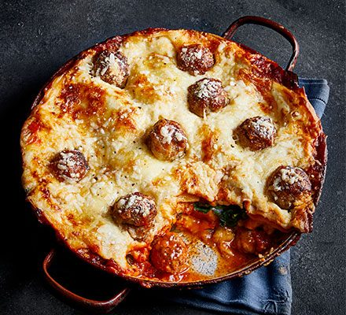

Three-cheese Meatball Lasagne

Description
Take lasagne to the next level by swapping the meat sauce for sausage meatballs. The fennel seeds and chilli add another layer of flavour and a little spice, creating a mouth-watering dish the whole family can enjoy - especially the kids!
Ingredients
- 12 sausages
- tbsp olive oil
- 2 onions, chopped
- garlic cloves, crushed
- 2 tsp fennel seeds
- 2 tsp dried oregano or a small handful of fresh oregano leaves, chopped
- 1/2 tsp chilli flakes (optional)
- 1 tbsp sugar
- 500ml passata
- 400g can chopped tomatoes
- 100g butter
- 2 bay leaves
- 100g plain flour
- 1l milk
- 1/4 fresh nutmeg, finely grated
- 100g baby spinach
- handful basil, leaves torn
- 50g parmesan, grated
- 250g dried lasagne sheets (around 12)
- 50g cheddar, grated
- 150g ball mozzarella, torn into small pieces
Steps
- Squeeze the meat from the sausages and roll into meatballs – you’ll get about four balls from each sausage. Heat 1 tbsp oil in a wide, deep frying pan or casserole dish. Cook the meatballs in batches, making sure you don’t overcrowd the pan, until they’re all golden brown. Put them aside on a plate when they’re ready.
- Heat the rest of the oil in the pan and add the onion. Cook for 8-10 mins until soft, then stir in the garlic, fennel, oregano and chilli, if using. Stir around for a min or 2, then add the sugar, passata and tomatoes. Swish a little water around the containers to wash out all the tomatoes and add to the pan. Season well and simmer, uncovered, for 30-40 mins over a gentle heat until the sauce thickens and the chopped tomatoes break down.
- Heat the butter in a saucepan, add the bay leaves and let them sizzle in the butter for 1 min, then add the flour. Whisk to make a smooth paste, then add the milk, a little at a time, stirring continuously until it’s all incorporated and you have a thick white sauce. Add the nutmeg and some seasoning. Leave over a low heat for 5 mins to allow the bay to infuse, whisking every now and then.
- Keep about 10 meatballs aside and add the rest to the tomato sauce. Spoon half the tomato sauce and meatballs into a baking dish (ours was 25cm x 35cm). Top with half the spinach, the basil and a little parmesan. Pour over about a third of the white sauce, and top with a layer of lasagne sheets, breaking them up to fit the dish if you need to.
- Repeat the layers once more; meatballs and sauce, spinach, basil, parmesan, white sauce, pasta. Pour the remaining white sauce over the lasagne, spreading it to the corners to cover the pasta. Dot with the meatballs you set aside earlier and the mozzarella, then scatter over a generous helping of parmesan and cheddar. Heat oven to 190C/170C fan/gas 5. Or if not eating straight away, chill for up to 24 hrs or freeze for two months (defrost in the fridge overnight before cooking).
- Bake the lasagne for 40-50 mins until bubbling and golden with lots of crusty cheesy bits around the edges. Leave to sit for 5-10 mins before serving.
Back to main page